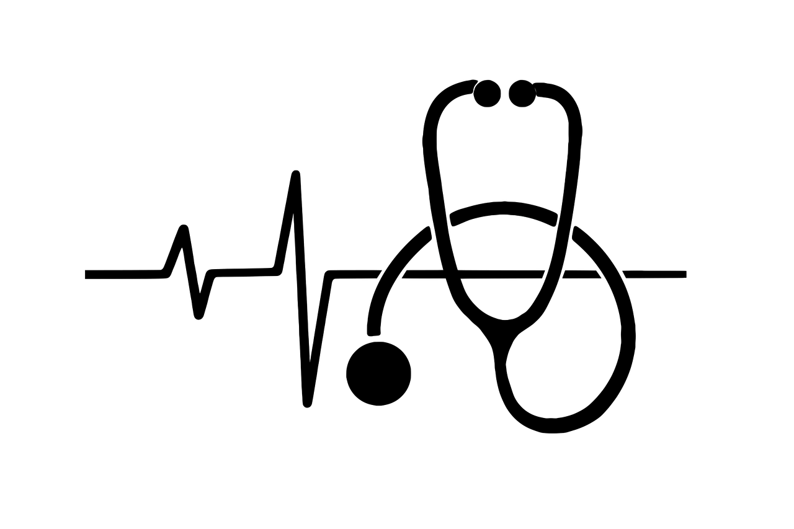
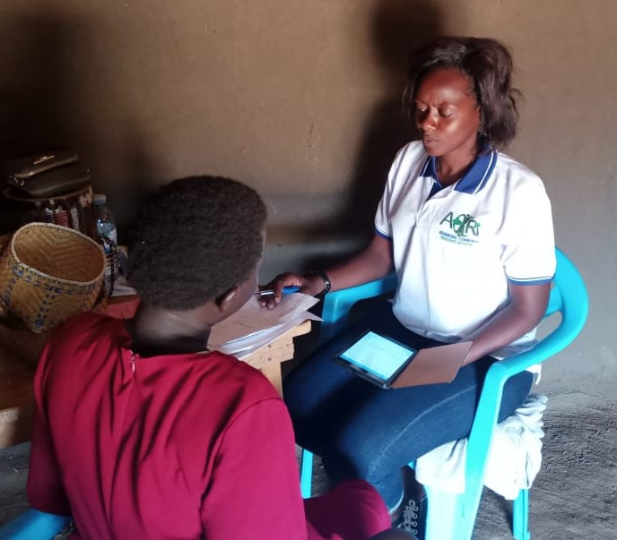
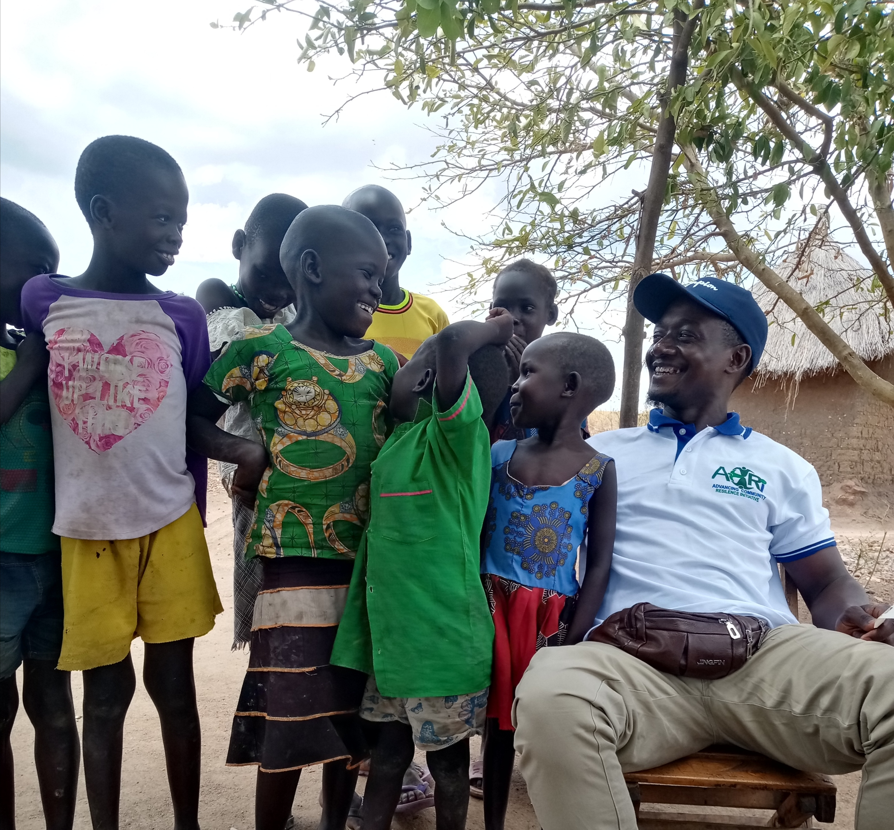
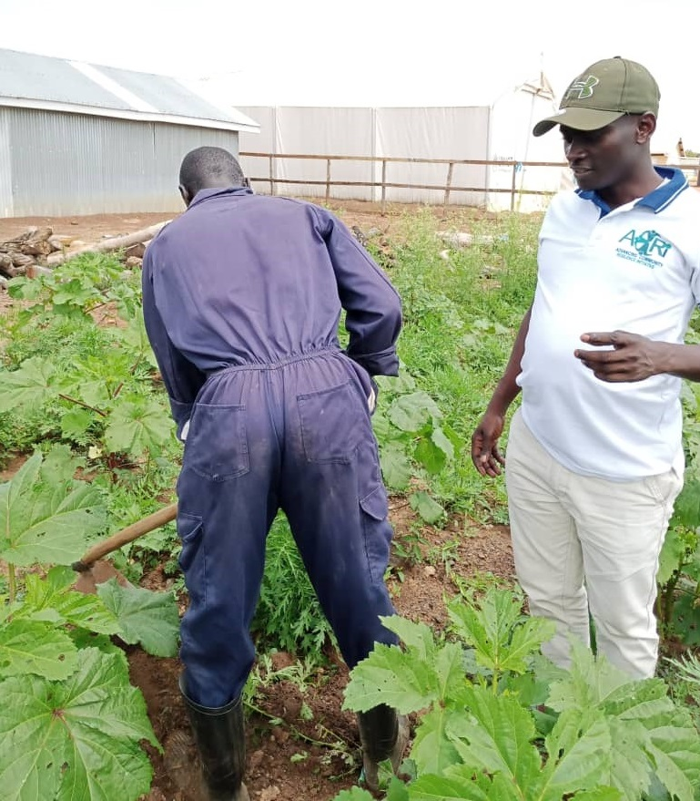
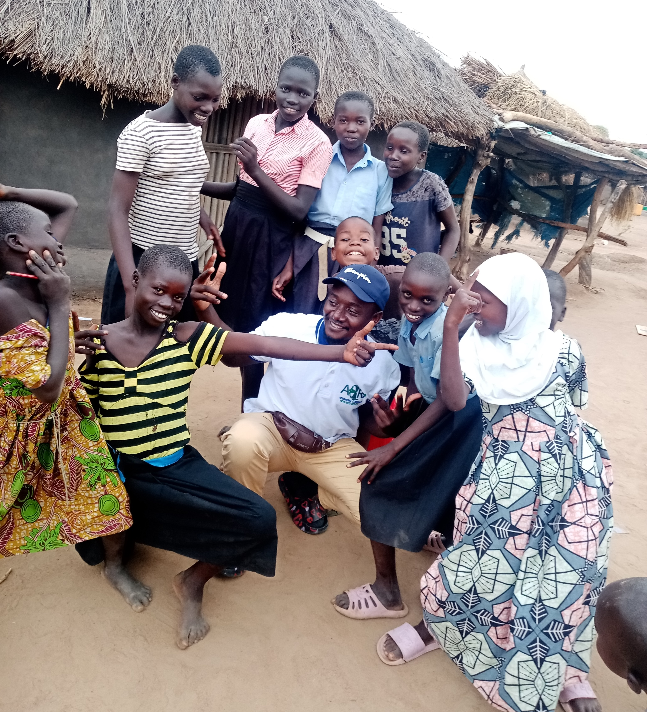

ACRI employs both a holistic and community driven approach,
these are both a hands-on approach with each program we have,
starting with working with the local communities to fully internalize
the needs of the people thus engaging with government to enhance their well-being
. Although the crises may be similar across various communities we work in, we understand
that the political, social, cultural and economic situation varies from region
to region within a country. This approach allows us to put in place
systematic monitoring and evaluation of our activities which enables
ACRI to deliver as per its mandate to its partners and beneficiaries.
Core Areas of Engagement
Health
At ACRI, we believe that health is the cornerstone of community resilience. Without access to proper healthcare, communities struggle to thrive and adapt in the face of challenges. Our approach to health goes beyond treating illness; we focus on prevention, education, and building sustainable health systems that empower individuals and communities to take charge of their well-being.
By addressing the root causes of health disparities, we work to ensure that even the most vulnerable populations can live healthier, more productive lives.
Health service provision and access are poor, and staff retention is a challenge. Advancing Community Resilience Initiative works at the community level to promote health, prevent disease, and assure that all family members have the opportunity to live and prosper. Our holistic approach ensures that even those living in unworthy conditions can benefit from comprehensive, quality healthcare services. As part of this process, Advancing Community Resilience Initiative engages with stakeholders through the VHT systems to help communities identify their own health priorities and needs, then explore the available local resources to meet them.


Health Resilience
Health resilience is the capacity of a community to adapt to
challenges and changes at different levels so that it can use
its assets to strengthen public health and healthcare systems
and to improve the community’s physical, behavioural, and
social health to withstand, adapt to, and recover from adversity.
These can be through the following:
Improved health-seeking behaviour adopted by individuals helps them to prepare communities and absorb sudden shocks, then remain resilient, during a crisis period. For example, if people adopt proper sanitation and hygiene practices, communities will more likely be safe and resilient during a cholera outbreak.
The resilience of a health system refers to its ability to absorb shocks, adapt, and respond by providing needed services. Resilience is built through investment and reforms. For instance, an integrated approach to improve the overall quality of healthcare is necessary in developing health resilience.
Health workforce competence, with the ability to identify threats early at local levels (in this case, the use of VHTs) and take immediate and effective action, is essential in ensuring health system resilience.
Maternal and Child Health
Child mortality is unevenly distributed across the country,
with mortality rates highest in Karamoja, Southwest,
West Nile, and western regions. Progress in nutrition
has remained slow. While stunting declined from 33
percent to 29 percent since 2011, almost 3 in 10 children
aged 6 to 59 months are stunted - UNICEF.
ACRI through community mobilization and its volunteers,
is working to strengthen service delivery with both local
and central governments plus other stakeholders,
while educating families and communities through the VHT
systems and this is intended to achieve the following;
Through ACRI's strategic plan, ACRI intends to achieve the following while working with its stakeholders:
Women or mothers can be able to receive quality reproductive health services.
Dissemination of information to communities through IEC materials.
Through the VHT system, access to inform for the people is achieved so that the fight against malnutrition amongst children is dealt with.
Youths are able to receive comprehensive prevention interventions
and access comprehensive HIV treatment and care to reduce HIV incidence and early pregnancies.
Children and their families and communities have access to safe drinking water and improved sanitation and hygiene practices
Nutrition
Malnutrition threatens to destroy a generation of children in Uganda. Whether poor or wealthy, children are malnourished for similar reasons. Women tend to get pregnant when young and have low birth-weight babies, which predisposes children to malnutrition. Repeated childhood infections such as diarrhea and low breastfeeding rates also lead to wasting and stunting. Families are either too poor, or do not know how to give their children a healthy diet.
Our approach to nutrition is holistic: we work to both prevent and treat malnutrition. We strengthen nutrition programs at the local and community levels in the districts of Uganda. Our prevention strategies focus on vulnerable groups, including adolescents, pregnant and lactating women, and children under 5. Our curative strategies center on children under 5, pregnant and lactating women. Our food security and livelihood programs help these vulnerable groups grow nutrient-rich foods and diversify their diets.
Protection (Preventing and Responding)
Women and children are the most vulnerable to violence, exploitation, and abuse just by virtue of their perceived gender roles and status. Sexual violence is also well known as a strategy of war, but other forms of gender-based violence include domestic violence (intimate partner violence), forced and early marriage, sexual exploitation, and female genital mutilation.
Protection is the term we use to include all of the services we provide to prevent violence against children, women, and others at-risk of abuse and the support we offer when violence does occur.
Prevention is just one step in the process of combating gender-based violence,
but it’s a step where we can involve the entire community in creating solutions. Through building community awareness of violence and strengthening women’s own leadership and capacity to help others, we can make a big impact in reducing violence. Men can also make a huge difference in changing attitudes about violence, so we engage men and boys to help them better understand the effects of violence and to give them the tools to be a voice against violence. We believe that we are strongest when working alongside communities ensuring that at-risk groups have the resources they need to feel empowered and protected.

Education
With access to quality education, children can become innovative, hence transforming their communities. There is a need to promote a resilient education system that can support our children until they complete school. There is still a lot that needs to be done to uplift the plight of children, especially primary school-going children, where only 36% of them, according to MOES and UBOS statistics, make it to the secondary school level, leaving 64% out. This is interlinked to many problems including child marriage, teenage pregnancy, abuse at schools, and school fees keeping many teens, especially girls, out of secondary schools.
Through ACRI’s strategic plan, we look at providing education grants and fees support, school feeding programmes, teacher training and support, school materials provision, and construction or rehabilitation of school structures, as well as support for co-curricular activities in schools through sports development that can act as dialogue sessions for most children both in and out of school. All children have the right to a safe, inclusive, and quality education. We want all children to be educated for life, in a safe environment, in order to lead productive lives.
Advancing Community Resilience Initiative education programming restores educational opportunities for children, focusing on the primary and secondary years of their life by creating safe, protected environments for students to learn. We work with schools, communities, and institutions to strengthen protection mechanisms and systems. We ensure well-being by providing young children with access to safe spaces where they can develop their emotional and social skills.
Livelihood
ACRI focuses on business training and SME development, farming skills, business grants, life-skills training, micro-credit loans, savings groups, and group enterprise development to improve the livelihoods of people in communities. We provide training and capacity development in agriculture, including agricultural inputs, particularly for women, to enhance their income, given their active involvement in agriculture (e.g., tools and seeds) and agricultural grants.
At ACRI, we recognize the value of vocational skills training as an alternative to employment and a pathway to sustainable livelihoods. Through its strategic plan, ACRI is aware of the importance of skills development for youth and single mothers, enabling them to earn an income and improve their social and economic well-being.


Sports Development
Sports can bring people together towards a common goal while promoting respect amongst the community. By building relationships between different groups, conflict can be transformed. In addition, sports can be used as a deterrent by teaching the values of good sportsmanship, teamwork, respect, and communication skills needed to reduce tensions and prevent conflict.
Advancing Community Resilience Initiative, through its strategic plan, uses sports development in peacebuilding. Sporting activities are being used as vehicles for HIV/AIDS education and prevention within the field of sport-for-development (SFD). Sport is a powerful tool that breaks down all walls by uniting people, crossing boundaries, and developing tolerance, respect, and social inclusion.
WASH - Water, Sanitation, and Hygiene
ACRI focuses on proper sanitation systems, access to clean drinking water, and hygiene education, which can mean the difference between life and death for vulnerable populations. We work to build sanitation systems, clean water systems, and provide hygiene education to families in a comprehensive manner.
Our clean water program emphasizes community participation. We utilize equipment and materials that are easy to repair and can be sourced locally to create fresh water systems and latrines for the communities we serve. Access to clean water remains a significant challenge in many regions of the country.
Advancing Community Resilience Initiative is working in communities facing vulnerable situations to improve access to sustainable water sources. We also collaborate with local leaders to create relevant messages that promote healthy hygiene practices, thus preventing the spread of diseases.